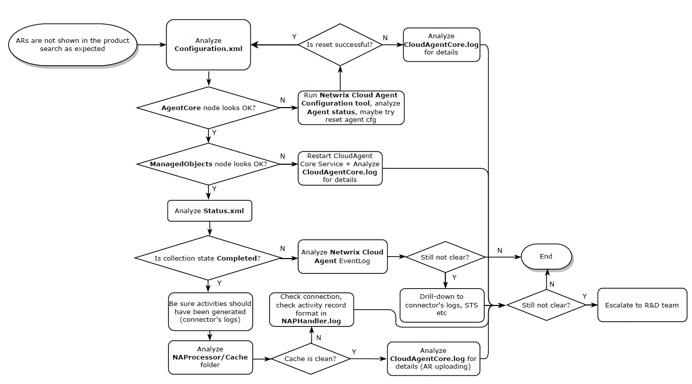

Overview
This article outlines the general troubleshooting workflow for Netwrix 1Secure. The article is split into six sections:
See Figure 1 for a reference.

Important locations
Refer to the important locations of various 1Secure files:
-
Configuration.xmlfile:C:\ProgramData\Netwrix Cloud Agent\AgentCore\ConfigServer
-
Status.xmlfile:C:\ProgramData\Netwrix Cloud Agent\AgentCore\ConfigServer
-
Cachefolder:C:\ProgramData\Netwrix Cloud Agent\NAProcessor\Cache
NOTE: For information on the escalation procedure and relevant files, refer to the following article: 1Secure − Escalation to R&D.
Locations of service-specific logs
Refer to the locations of data collection logs for specific services:
-
Active Directory Activity logs:
C:\ProgramData\Netwrix Cloud Agent\Logs\ActiveDirectory\ — ADA logs C:\ProgramData\Netwrix Cloud Agent\Logs\DataCollectionCore\AgentDataCollectionCoreSvc\ — 1Secure task manager logs C:\ProgramData\Netwrix Cloud Agent\ShortTerm\AD Changes\STA\ — short-term storage
-
Active Directory Logons logs:
C:\ProgramData\Netwrix Cloud Agent\Logs\DataCollectionCore\NetwrixCloudNLASvc\ — NLA logs C:\ProgramData\Netwrix Cloud Agent\NLA\Data\ — short-term storage
-
File Server Activity logs:
C:\ProgramData\Netwrix Cloud Agent\Logs\DataCollectionCore\NetwrixCloudFSASvc\ — FSA logs C:\ProgramData\Netwrix Cloud Agent\FileStorageAuditor\Data\ — short-term storage
-
Common infrastructure
C:\ProgramData\Netwrix Cloud Agent\Logs\CloudAgentCoreSvc\ — logs C:\ProgramData\Netwrix Cloud Agent\Logs\Archive\ — all archive logs C:\ProgramData\Netwrix Cloud Agent\AgentCore\MetricsStorage\ — internal risk counters database